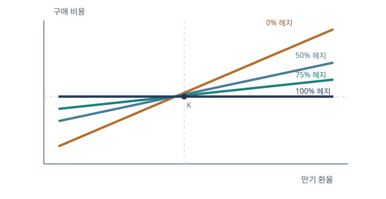
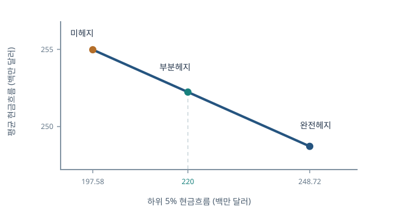

선도 헤지와 현금흐름의 하방위험
공정한 선도가격을 안 뒤에도 ‘얼마나 헤지할 것인가’라는 의사결정은 남는다. 완전헤지는 환율 민감도를 0으로 만들지만 기대 현금흐름을 바꾸고, 부분헤지는 남은 위험과 기대값을 함께 조절한다. 사업수익이 환율에 따라 불연속적으로 변하면 선형 선도만으로는 전체 분포를 한 점에 모을 수 없다.
가격에서 위험관리로
앞 장의 무차익 가격 \(F_{0,T}\)는 계약을 맺는 공정한 환율을 알려 준다. 이 장의 변수 \(Q\)는 계약의 규모와 방향을 뜻한다. 어떤 기업의 기존 현금흐름을 \(C(S_T)\)라 하면 선도 매수 \(Q\)를 더한 최종 현금흐름은
\(Q>0\)은 기초통화 매수, \(Q<0\)은 매도다. 최종 위험은 \(C\)와 선도손익의 합으로 계산한다.
환율이 1단위 변할 때 기존 사업현금흐름이 얼마나 움직이는지는 \(C'(S_T)\)로 나타낼 수 있다. 선도를 더한 뒤의 민감도는 \(CF_Q'(S_T)=C'(S_T)+Q\)다. 사업이 모든 환율에서 같은 기울기 \(A\)를 가진다면 \(Q=-A\) 하나로 민감도를 0으로 만들 수 있다. 그러나 \(C'(S_T)\)가 환율 구간마다 다르면 한 개의 상수 \(Q\)가 모든 구간에서 \(C'(S_T)+Q=0\)을 만족할 수 없다. 이 미분식이 뒤의 선형 완전헤지와 비선형 부분헤지를 한눈에 구분한다.
헤지의 성과 지표를 먼저 정하기
분산을 최소화할지, 5% 하위 현금흐름을 목표 이상으로 올릴지, 특정 확률로 연구개발비를 확보할지에 따라 최적 \(Q\)가 달라진다. 예를 들어 \(\Pr(CF_Q\geq220)\geq95\%\)라는 목표는 ‘평균 현금흐름이 220 이상’보다 강하다. 평균은 좋은 상태의 큰 수익으로 올라갈 수 있어도 나쁜 상태의 자금 부족을 감출 수 있기 때문이다.
현금흐름 분포가 연속적이라면 이 목표는 하위 5% 분위수 \(q_{0.05}(CF_Q)\)가 적어도 220이라는 조건과 연결된다. 분위수는 현금흐름이 그 값 이하인 확률이 5%가 되는 경계다. 평균이 250인 두 기업이라도 한쪽은 현금흐름이 늘 240~260 사이, 다른 쪽은 5% 확률로 100까지 떨어진다면 연구개발비 220을 안정적으로 마련하는 능력은 다르다. 헤지 수량을 고르기 전에 평균·분산·하방 목표 중 무엇을 지키려는지 명시해야 계산 결과의 의미가 분명해진다.
헤지비율과 방향
기존 사업이 환율 \(S_T\) 상승에 이익을 본다면 선도 매도(\(Q<0\))가 그 이익을 줄이는 동시에 하락 손실을 상쇄한다. 선형 노출이 \(A S_T\)이면 \(Q=-A\)가 완전헤지다. 헤지비율 \(h=-Q/A\)를 정의하면 \(h=0\)은 미헤지, \(h=1\)은 완전헤지다. \(0<h<1\)은 부분헤지이며, \(h>1\)은 기존 노출보다 많이 매도해 위험 방향을 뒤집는 과잉헤지다. 모든 상품에서 ‘100%’가 자동으로 최적이라는 뜻은 아니다.
기존 사업을 \(B+AS_T\)라고 쓰면 선도를 더한 뒤 \(CF_Q=B+(A+Q)S_T-QF\)가 된다. \(Q=-hA\)를 대입하면 환율에 붙은 계수는 \(A(1-h)\)다. 따라서 \(h=0.6\)은 원래 환율 민감도의 40%가 남는다는 뜻이고, \(h=1.2\)는 \(-0.2A\)가 되어 기울기의 방향이 반대로 바뀐다. 매출액의 120%를 헤지했다는 말만으로 위험이 더 적다고 판단하면 안 된다. 실제 수량 \(A\)가 불확실하면 예상 노출을 정확히 맞춘 \(h=1\)에도 과잉 또는 부족 헤지가 생길 수 있다.
원/달러 선도 매수·매도 손익선
달러 1달러의 약정 인도가격을 \(K=1,026\)원/달러라 하면 달러 선도 매수 손익은 \(S_T-1,026\)원, 매도 손익은 \(1,026-S_T\)원이다. 두 직선은 \(S_T=1,026\)에서 0과 만나고 기울기는 각각 \(+1\), \(-1\)이다. 가로축의 단위가 원/달러이므로 ‘달러가 강해진다’는 것은 이 그림에서 오른쪽으로 움직인다는 뜻이다.
\(S_T=1{,}100\)원/달러면 매수자는 달러 1개당 74원을 벌고 매도자는 74원을 잃는다. \(S_T=950\)원이면 매수자는 76원을 잃고 매도자는 76원을 번다. 계약 수량이 1만 달러라면 각각의 74원은 74만 원으로 커진다. 손익선의 세로축을 읽을 때 달러 1단위당 원화인지 전체 계약 원화인지를 확인해야 한다. 선도 매도가 수출업자에게 헤지가 되는 이유는 환율 하락 시 줄어드는 원화 매출을 이 두 번째 손익선이 보완하기 때문이다.
수입업자의 구매비용과 부분헤지
만기에 1달러가 필요한 기업의 미헤지 원화 비용은 \(S_T\)다. 달러 선도 매수로 \(h\)달러를 미리 확보하면 총 원화 비용은
\(h=0.5\)면 기울기가 \(0.5\), \(h=0.75\)면 \(0.25\), \(h=1\)이면 비용이 \(K\)로 완전히 고정된다. 높은 환율 구간의 나쁜 결과를 줄이는 대신 낮은 환율 구간의 유리한 결과도 포기한다. 이를 선도 ‘프리미엄’이라고 부르면 오해가 생긴다. 선도 신규계약에 직접 내는 옵션 프리미엄은 보통 없지만 기회비용은 있다.
\(K=1{,}300\)원/달러, \(h=0.75\)라면 환율이 1,500원일 때 비용은 \(0.25(1{,}500)+0.75(1{,}300)=1{,}350\)원이다. 미헤지 1,500원보다 150원 낮다. 환율이 1,100원일 때는 비용이 \(0.25(1{,}100)+0.75(1{,}300)=1{,}250\)원으로 미헤지 1,100원보다 150원 높다. 나쁜 상태의 비용을 낮추는 대가로 좋은 상태의 절감 기회를 포기한다. 옵션 매수라면 처음 프리미엄을 내는 대신 한쪽 이익을 남길 수 있지만 여기의 선도는 양쪽 변화 모두를 직선적으로 줄인다.

분포가 왜 좁아지는가
\(S_T\)의 표준편차를 \(\sigma_S\)라 하고 \(K,h\)가 확정이라면 \(C_h=(1-h)S_T+hK\)이므로 \(\operatorname{Var}(C_h)=(1-h)^2\operatorname{Var}(S_T)\)이다. 완전헤지에서 환율만이 위험이라면 분산은 0이다. 부분헤지에서는 표준편차가 \(|1-h|\sigma_S\)로 줄어든다. 그림의 종 모양이 좁아지는 이유를 이 식이 설명한다. 실제 비용에 물량·수요·베이시스 위험이 있으면 완전헤지 뒤에도 분산이 남는다.
이 계산은 \(\operatorname{Var}(aX+b)=a^2\operatorname{Var}(X)\)에서 바로 나온다. 상수 \(hK\)는 어떤 환율 상태에서도 같아 변동성을 만들지 않고, 무작위인 \(S_T\)에 붙은 계수만 \(1-h\)로 줄어든다. \(h=0.75\)라면 비용의 표준편차는 원래의 \(|1-0.75|=25\%\)다. 분산은 계수의 제곱 때문에 원래의 \(6.25\%\)가 된다. 표준편차 25%와 분산 25%는 다른 주장이므로 그래프의 폭을 말할 때 어느 수치인지 구분하자.
\(h=1.25\)로 지나치게 매수하면 계수 \(1-h=-0.25\)가 되어 표준편차는 다시 원래의 25%가 된다. 분산만 보면 \(h=0.75\)와 같아도, 전자는 환율 상승 때 비용이 오히려 감소하는 반대 노출이다. 위험의 크기와 방향을 구별해야 한다. 또한 기업의 비용이 \(S_T\) 외에 다른 무작위 변수 \(U_T\)에도 의존한다면 \(C_h=(1-h)S_T+hK+U_T\)이고, 환율만 100% 헤지해도 \(\operatorname{Var}(U_T)\)는 남는다. 환율과 \(U_T\)가 상관되어 있다면 공분산 항까지 포함해 실제 최적 비율을 계산해야 한다.
외화선도 한 건의 두 현금흐름
기업이 1개월 뒤 1,000만 파운드를 1파운드당 1.5달러에 사기로 하면 계약 규모는 파운드 1,000만, 달러 지급액은 1,500만 달러다. 만기에는 파운드를 받고 달러를 낸다. 차액결제라면 달러 기준 손익은 \(10{,}000{,}000(S_T-1.5)\)이다. 실제 인도와 차액결제는 계약 조건에 따라 다르지만 환율 방향의 경제적 노출은 같다. T+2 같은 실제 자금 결제일은 계약 만기·관측일과 구별한다.
만기 환율이 1.6달러/파운드면 시장에서 1,000만 파운드를 사는 데 1,600만 달러가 필요하지만 선도에서는 1,500만 달러만 내므로 100만 달러의 경제적 이익이 있다. 환율이 1.4면 같은 크기의 손실이다. 이 금액은 \(Q(S_T-K)\)에서 \(Q\)의 단위가 파운드, 괄호의 단위가 달러/파운드이므로 달러가 된다. 실물인도에는 1,500만 달러의 결제자금 전체가 필요하지만, 차액결제에는 순손익만 지급한다는 차이도 함께 적어야 한다.
환율의 분자와 분모를 바꾸면 포지션도 바뀐다
\(F=1.5\) USD/GBP는 1파운드의 달러 가격이다. 이 가격으로 파운드를 매수한다는 것은 GBP 매수·USD 매도다. 역환율 GBP/USD로 바꾸면 수치가 \(1/1.5\)가 되지만 선도 가격을 단순히 역수로 바꾸는 데는 매수·매도 호가와 결제 통화의 차이도 고려해야 한다. 계약 수량 \(Q\)가 어떤 통화 단위인지 적지 않으면 \(Q(S_T-F)\)의 단위가 모호해진다.
현물환율 1.5 USD/GBP의 역수는 약 0.6667 GBP/USD다. 그러나 ‘파운드 1개를 1.5달러에 산다’는 거래를 역표시로 읽을 때는 달러 1.5개를 지급하고 파운드 1개를 받는다는 두 현금흐름을 먼저 유지해야 한다. 환율 숫자만 역수로 바꾸고 매수·매도 방향을 그대로 두면 거래의 반대편을 계산하게 된다. 실제 시장에는 매수호가와 매도호가가 달라 두 방향을 동시에 정확한 역수 하나로 거래할 수도 없다. 통화별 지급액을 먼저 적는 습관이 부호 오류를 막는다.
AnGen의 두 시장: 환율이 매출을 두 번 움직인다
이 기업의 미국 매출은 기본 3억 달러이고, 일본 경쟁사의 달러 가격 변화에 대응해 환율에 따라 변한다. 일본 매출은 520억 엔으로, 달러 환산액은 환율 \(S_T\)(USD/JPY)에 비례한다. 금액을 백만 달러로 표현하면 520억 엔은 52,000백만 엔이므로 일본 매출은 \(52{,}000S_T\)백만 달러다. 미국 매출의 환율 민감도 40,000을 더하면 사업 전체 민감도는 92,000이다. 미국 매출의 기준값을 기대 환율에서 300으로 맞추어 두면 아래 식이 나온다.
환율이 0.001달러/엔 높아지면 일본 매출의 달러 환산액은 \(52{,}000\times0.001=52\)백만 달러 증가한다. 미국 매출도 경쟁 가격 효과에 따라 \(40{,}000\times0.001=40\)백만 달러 증가하는 모형이므로 총매출 민감도는 92백만 달러다. 두 시장에서 환율이 작용하는 경로는 외화 매출의 단순 환산과 미국 시장에서의 경쟁 가격 변화로 다르다. 따라서 일본 매출만 보고 52,000백만 엔을 헤지하면 미국 매출에 해당하는 40,000백만 엔의 환율 노출이 남는다.
로그정규 환율의 평균과 하위 5%
환율의 로그변화 \(X=\ln(S_T/S_0)\)가 평균 \(\mu=0.011153\), 표준편차 \(\sigma=0.05\)인 정규분포라고 하자. 그러면 \(S_T=S_0e^X\)이고 \(e^X\)의 평균 성질 때문에
\(S_0=0.007692\)이면 \(E[S_T]\approx0.007788\) USD/JPY다. 정규분포 하위 5%의 표준점수 \(z_{0.05}\approx-1.64485\)를 쓰면
여기서 \(\mu\)는 로그환율 변화의 평균, \(E[S_T]\)는 환율 수준의 평균이다. 둘을 같은 숫자로 두면 평균 현금흐름부터 틀린다.
평균식은 로그정규분포의 지수 평균에서 나온다. \(Z\sim N(0,1)\)로 놓으면 \(X=\mu+\sigma Z\)이고, 표준정규 밀도를 \(\phi\)라 할 때
가운데 등식은 지수부를 \(\sigma z-z^2/2=-(z-\sigma)^2/2+\sigma^2/2\)로 완전제곱한 결과다. 따라서 \(E[S_T]=S_0e^\mu E[e^{\sigma Z}]=S_0e^{\mu+\sigma^2/2}\)다. 분위수는 더 간단하다. 지수함수는 증가함수이므로 \(P(S_T\le s)=\Phi((\ln(s/S_0)-\mu)/\sigma)\)이고, 이 식을 \(p\)에 맞춰 풀면 \(s_p=S_0e^{\mu+\sigma\Phi^{-1}(p)}\)다. 여기서 \(\Phi\)는 표준정규 누적분포함수다.
로그환율 변화의 평균 \(\mu\)를 그대로 환율 수준의 평균 변화율로 읽으면 \(\sigma^2/2\) 항을 빠뜨린다. 같은 입력에서 환율의 중앙값은 \(S_0e^\mu\)이고 평균은 \(S_0e^{\mu+\sigma^2/2}\)로 조금 더 높다. 지수함수의 볼록성 때문에 큰 환율 상승 상태가 평균을 더 끌어올리기 때문이다. 하위 5% 환율은 평균에서 단순히 \(1.645\sigma\)를 빼는 방식이 아니라 로그 단위에서 \(\mu-1.645\sigma\)를 만든 뒤 지수로 되돌려야 한다. 이 순서를 지키면 환율이 음수가 되는 잘못된 근사도 피한다.
현금흐름 모형과 단위를 한 번 더 검산하기
비연구개발 비용은 4억 5천만 달러이므로 단위를 백만 달러로 맞추면 \(450\)이다. 따라서 선도를 포함하지 않은 사업 현금흐름은
\(S_T\)의 단위가 달러/엔, 계수의 단위가 백만 엔이므로 곱은 백만 달러다. 비용 \(450\)을 원화나 엔화로 착각하면 숫자가 수백 배 달라진다. 현금흐름 위험의 출발점은 \(\partial CF_0/\partial S_T=92{,}000\)백만 엔이다.
기대 환율 \(m=E[S_T]\)를 대입하면 미국 매출 보정항 \(40{,}000(S_T-m)\)의 기대값은 0이다. 그래서 평균 현금흐름은 \(E[CF_0]=300+52{,}000m-450=52{,}000m-150\)으로 단순해진다. 반면 실제 환율이 기대보다 낮은 상태에서는 미국 매출 보정항도 음수가 되어, 일본 매출 환산 손실과 같은 방향으로 하방 현금흐름을 악화시킨다. 평균 계산에서 사라진 항이 위험 계산에서 사라지는 것은 아니다.
미헤지와 완전헤지의 기대값·하위값
현금흐름이 \(S_T\)에 대해 증가하므로 미헤지의 하위 5% 현금흐름은 \(s_{0.05}\)에서 나온다. 계산하면
완전헤지는 \(Q=-92{,}000\)백만 엔을 매도한다. \(CF_Q=CF_0+Q(S_T-F)\)에 넣으면 \(S_T\) 항이 없어져
백만 달러가 모든 상태에서 확정된다(\(F=0.00772\)). 평균은 낮지만 5% 하방 현금흐름은 높다. \(E[S_T]>F\)라는 숫자에서는 선도 매도로 평균 상승의 일부를 포기했기 때문이다. 공정 선도가격이 미래 현물의 실제 기대값과 같아야 한다는 법칙은 없다.
미헤지 현금흐름의 환율 기울기 92,000에 선도 매도 수량 \(-92{,}000\)을 더하면 0이다. 그래서 완전헤지의 5% 분위수와 평균은 둘 다 같은 확정값 약 248.720이 된다. 미헤지는 평균 약 254.976으로 더 높지만 나쁜 환율 상태에서는 약 197.583까지 내려간다. 두 전략의 차이는 단순히 6.256백만 달러의 평균 포기가 아니라 최저 자금 목표를 충족할 확률이 어떻게 바뀌는가다. 이 예는 환율 외의 위험을 고정했다는 모형 안에서만 완전한 확정값을 얻는다.
2억 2천만 달러를 확보하는 부분헤지
\(Q\)를 백만 엔 단위의 선도 매수량으로 정의하면 매도는 음수다. \(-92{,}000\leq Q\leq0\) 범위에서는 \(CF_Q\)가 환율에 따라 증가하므로 5% 현금흐름을 \(s_{0.05}\)에 대입할 수 있다.
이를 목표 \(220\)에 맞춰 \(Q=[220-q_{0.05}(CF_0)]/(s_{0.05}-F)\approx-40{,}330\)을 얻는다. 즉 약 403.3억 엔의 매도 선도다. 기대 현금흐름은
백만 달러다. 분모 \(s_{0.05}-F<0\)이므로 하방 현금흐름을 올리려면 \(Q<0\)이어야 한다는 부호도 확인할 수 있다.
수량을 구하는 식의 분자는 필요한 하방 개선액 \(220-197.583=22.417\)백만 달러다. 분모는 하방 환율에서 엔화 1백만 단위를 매도했을 때의 달러 손익 변화 \(s_{0.05}-F\approx-0.000556\) 달러/엔이다. 음의 \(Q\)를 곱하면 양의 개선액이 나온다. \(Q\approx-40{,}330\)백만 엔은 완전헤지 규모 92,000백만 엔의 약 43.8%이므로 환율 민감도는 아직 약 56.2% 남는다. 목표 220을 채우기 위해 모든 상승 기회를 포기할 필요는 없다는 결론이 수식에서 나온다.
평균과 하방의 교환관계
미헤지 \(Q=0\)은 \((q_{0.05},E[CF])\approx(197.58,254.98)\), 부분헤지 \(Q=-40{,}330\)은 \((220,252.23)\), 완전헤지 \(Q=-92{,}000\)은 \((248.72,248.72)\)이다. 가로축을 하위 5% 현금흐름, 세로축을 평균으로 두면 헤지가 커질수록 왼쪽 아래에서 오른쪽 아래로 움직인다. 완전헤지 수량은 \(-92{,}000\)백만 엔, 즉 엔화 920억 엔의 매도이며, 수량과 통화 단위를 함께 적어야 크기를 정확히 해석할 수 있다.
이 직선적인 교환관계는 현금흐름이 \(S_T\)의 아핀함수이고 \(Q\)가 \(-92{,}000\) 이상일 때 성립한다. 과잉헤지하면 하위 5%를 만드는 환율 상태가 상위 5% 환율로 바뀌므로 같은 식을 계속 쓰면 안 된다.
이 범위에서 \(E[CF_Q]=E[CF_0]+Q(m-F)\)이고 \(q_{0.05}(CF_Q)=q_{0.05}(CF_0)+Q(s_{0.05}-F)\)다. \(m-F>0\)이고 \(s_{0.05}-F<0\)이므로 \(Q\)를 더 음수로 만들면 평균은 내려가고 하방은 올라간다. \(Q\)를 제거하면 두 지표가 직선 관계에 놓인다는 것을 알 수 있다. 그러나 이 그래프가 모든 기업에 공통인 ‘최적선’은 아니다. 분포와 사업 노출, 목표 자금액이 바뀌면 기울기가 달라지고, 과잉헤지에서는 하방을 만드는 상태 자체가 바뀐다.

비선형 매출은 왜 선도로 고정되지 않는가
이제 일본 매출 민감도가 환율 구간에 따라 달라진다고 하자. 미국 매출은 300백만 달러, 기존 비용은 450백만 달러다. 일본 매출 계수를 \(a(s)\)로 쓰면
이 단순화한 수요모형은 임계값에서 불연속이다. \(k_2\) 바로 아래와 위의 현금흐름은 각각 약 \(-85\)와 \(142.5\)백만 달러, \(k_1\) 바로 아래와 위는 \(187.5\)와 \(262.5\)백만 달러다. 이 수요의 점프는 기울기가 일정한 선도 손익으로 상쇄할 수 없다. 연구개발 목표도 여기서는 200백만 달러로 바뀐다.
각 구간에서 선도를 더하면 기울기는 각각 \(10{,}000+Q\), \(45{,}000+Q\), \(55{,}000+Q\)다. 하나의 \(Q\)가 세 기울기를 모두 0으로 만들 수 없음은 세 계수가 다르다는 사실만으로 증명된다. 더욱이 선도의 지급액 \(Q(s-F)\)는 \(s\)에 대해 연속이므로 \(k_1,k_2\)에서 사업 매출이 불연속적으로 뛰는 점프 자체도 지울 수 없다. 선형 선도만으로 모든 상태를 같은 현금흐름으로 만드는 ‘완전헤지’가 불가능한 구조적 이유다.
비선형 현금흐름의 분포
동일한 로그정규 환율을 사용하면 높은 환율 구간 \(S_T>k_1\)의 확률은 약 \(76.688\%\), 중간 구간 \(k_2<S_T\leq k_1\)은 \(23.295\%\), 낮은 구간 \(S_T\leq k_2\)는 \(0.0165\%\)다. 사업 현금흐름의 분포는 각 구간의 다른 직선과 임계값의 점프를 합친 것이므로 종 모양 하나로 근사하기 어렵다. 미헤지 평균은 약 \(261.317\)백만 달러이지만 하위 5% 현금흐름은 약 \(172.387\)백만 달러다. 평균만 보면 목표 200을 넉넉히 넘지만 나쁜 상태의 자금은 부족하다.
세 구간의 확률은 환율 누적분포 \(G(s)=\Phi((\ln(s/S_0)-\mu)/\sigma)\)에서 \(G(k_2)\), \(G(k_1)-G(k_2)\), \(1-G(k_1)\)로 각각 구한다. 낮은 구간 확률이 작아도 그 구간의 현금흐름은 매우 낮으므로 하위 꼬리의 위치를 찾을 때 빼놓으면 안 된다. 평균을 계산할 때는 각 구간 확률에 대표 환율 하나를 곱하는 거친 방식보다 그 구간의 \(E[S_T\mathbf1]\)를 사용해야 한다. 구간 내부에서도 환율이 연속적으로 움직이기 때문이다.
비선형 평균을 적분으로 구하기
각 구간의 계수와 그 구간에서의 \(S_T\) 평균 기여분을 곱해야 한다. \(M(a)=E[S_T\mathbf1_{\{S_T\leq a\}}]\)라 두면 로그정규분포의 적분을 완전제곱으로 정리해
이를 사용하면 선도 수량 \(Q\)를 포함한 평균은
\(M(k)\)는 단순히 \(E[S_T]P(S_T\leq k)\)가 아니다. 환율이 낮은 상태의 평균이 전체 평균보다 낮다는 점을 적분이 반영한다.
\(M(a)\) 식의 유도
\(X=\ln(S_T/S_0)\)의 밀도에 \(S_0e^x\)를 곱해 \(x\leq\ln(a/S_0)\)에서 적분한다. 지수부 \(x-(x-\mu)^2/(2\sigma^2)\)를 \(-(x-\mu-\sigma^2)^2/(2\sigma^2)+\mu+\sigma^2/2\)로 완전제곱하면 앞의 계수 \(S_0e^{\mu+\sigma^2/2}\)와 표준정규 누적분포 \(\Phi\)가 나온다.
평균식을 세 항으로 나누면 낮은 구간에서는 \(10{,}000M(k_2)\), 중간 구간에서는 \(45{,}000[M(k_1)-M(k_2)]\), 높은 구간에서는 \(55{,}000[m-M(k_1)]\)가 된다. 각 항은 그 구간에서 실제 발생하는 환율 수준과 사업 계수를 함께 평균낸 것이다. 단순히 구간확률에 전체 평균환율 \(m\)을 곱하면 낮은 구간에서도 평균환율만큼 매출이 발생한다고 가정하는 셈이 되어 평균을 과대평가할 수 있다. 선도 손익은 구간과 무관한 선형식이므로 마지막에 \(Q(m-F)\)를 한 번 더하면 된다.
비선형 CFaR는 원래 환율의 5% 분위수가 아닐 수 있다
이 장에서 \(CFaR_{5\%}\)는 현금흐름 분포의 하위 5% 분위수 \(q_{0.05}(CF_Q)\)로 정의한다. 선도 후 각 구간의 현금흐름은 \(h_j(s)=-150+(a_j+Q)s-QF\)다. 전체 누적분포는
\(Q\geq-45{,}000\)이고 낮은 환율 구간의 매우 희귀한 점프를 따로 세면 하위 5%는 중간 구간의 \(s_{0.05}\approx0.007164\)에서 형성된다. 하지만 \(Q<-45{,}000\)이면 중간 구간의 기울기 \(45{,}000+Q\)가 음수가 되어, 중간 구간에서는 더 높은 환율이 오히려 더 낮은 현금흐름을 만든다. 기존의 \(s_{0.05}\)를 기계적으로 대입하면 잘못된 값이다.
이를 식으로 보면 \(h_m(s)=-150+(45{,}000+Q)s-QF\)이므로 \(dh_m/ds=45{,}000+Q\)다. 기울기가 양수일 때 작은 환율이 작은 현금흐름을 뜻하지만, 기울기가 음수이면 같은 구간에서 큰 환율이 작은 현금흐름을 뜻한다. 분위수를 구할 때 필요한 것은 환율의 ‘항상 왼쪽 5%’가 아니라 **현금흐름이 가장 낮은 상태를 차례로 모은 5%**다. 불연속이 있는 구간별 지급액에서는 서로 떨어진 여러 환율 구간이 같은 하위 꼬리에 들어갈 수 있다.
누적확률을 실제로 구할 때는 목표 현금흐름 \(c\)를 하나 정하고 각 구간에서 부등식 \(h_j(s)\leq c\)를 푼다. 기울기 \(a_j+Q>0\)이면 해당 구간의 왼쪽 환율들이 포함되고, 음수이면 오른쪽 환율들이 포함된다. 얻은 환율 범위를 원래 구간 \(I_j\)와 교집합한 다음 그 확률을 세 구간에 걸쳐 더한다. 이렇게 만든 \(P(CF_Q\leq c)\)가 0.05가 되는 \(c\)를 찾는 것이 일반적인 절차다. 단조성의 방향을 구간마다 확인해야 하나의 환율 분위수를 전체 현금흐름에 잘못 대입하지 않는다.
기울기가 뒤집힌 뒤의 분위수 찾기
\(-55{,}000<Q<-45{,}000\)라면 높은 환율 구간의 기울기는 여전히 양수이고 중간 구간은 음수다. 매우 낮은 환율 구간의 확률 \(p_\ell=P(S_T\leq k_2)\approx0.000165\)를 아래쪽 꼬리로 포함한다. 중간 구간에서 현금흐름이 가장 낮은 쪽은 \(S_T\)가 \(k_1\)에 가까운 쪽이므로, 그 안에서 추가로 필요한 확률은 \(0.05-p_\ell\)이다. 따라서 임계 환율 \(s^*\)는
정규 누적분포를 역으로 사용하면 \(s^*=S_0\exp\{\mu+\sigma\Phi^{-1}(0.183283)\}\approx0.007435\)다. 아주 낮은 구간에서 \(h_\ell(s)\)가 다시 위로 올라가는 극단적 꼬리는 이 수치 예제에서 무시할 만큼 작은 확률이다. 정확한 일반 문제라면 위 누적분포 식으로 모든 구간의 역상을 확인해야 한다.
계산 순서를 다시 적으면 먼저 \(P(S_T\le k_j)=\Phi((\ln(k_j/S_0)-\mu)/\sigma)\)로 두 경계의 누적확률을 구한다. 낮은 구간이 차지하는 확률 \(p_\ell\)을 목표 0.05에서 빼고, 중간 구간의 오른쪽 끝에서 그 확률만큼 거슬러 내려온 누적확률을 \(u\)라고 한다. 마지막으로 \(s^*=S_0e^{\mu+\sigma\Phi^{-1}(u)}\)를 계산한다. 어느 구간이 하위 꼬리에 먼저 들어가는지는 각 구간의 \(h_j(s)\) 최솟값을 비교해 결정한다. 환율 분위수 → 현금흐름 분위수를 한 번에 치환할 수 있는 것은 현금흐름이 환율 전체 구간에서 단조로울 때뿐이다.
낮은 구간의 확률 \(p_\ell\approx0.000165\)는 전체 5% 꼬리의 약 0.33%에 해당한다. 작다고 해서 무조건 0으로 놓으면 중간 구간에서 가져와야 할 확률을 그만큼 잘못 잡는다. 중간 구간의 기울기가 음수이므로 가장 작은 현금흐름은 그 구간의 오른쪽 경계 \(k_1\) 바로 아래에서 시작한다. 따라서 \(G(k_1)-G(s^*)=0.05-p_\ell\)을 풀어 \(s^*\)를 구한다. 아주 극단적인 낮은 환율에서 손익 순서가 다시 바뀌는지 확인하려면 앞 절의 구간별 누적분포를 사용해야 한다.
비선형 목표 200을 맞추는 수량
중간 구간에서 \(CFaR_{5\%}=h_m(s^*)=-150+(45{,}000+Q)s^*-QF\)다. \(F=0.007720\) USD/JPY, \(s^*\approx0.007434919\)를 넣고 목표 \(200\)에 맞추면
이때 기대 현금흐름은 앞 평균식으로 약 \(257.637\)백만 달러다. 선도환율의 다섯째·여섯째 소수자리 차이가 \(Q\)를 크게 바꿀 수 있다. 예컨대 같은 \(s^*\)와 목표에서 \(Q=-53{,}131\)을 얻으려면 \(F\approx0.0077253\)을 사용해야 한다. 입력 환율과 헤지수량을 함께 표기하고 검산해야 하는 이유다.
목표식은 \(200=-150+45{,}000s^*+Q(s^*-F)\)다. 여기서 \(s^*<F\)이므로 엔화 매도인 \(Q<0\)은 하방 현금흐름을 높인다. 하지만 분모 \(s^*-F\)의 절댓값은 약 0.000285로 작다. 목표 현금흐름이나 선도환율의 반올림 오차가 작아 보여도 헤지 수량에는 큰 변화를 일으킬 수 있다. 계산값을 표시할 때는 환율의 소수 자릿수, 엔화 수량의 단위가 백만 엔인지 엔인지, 목표 현금흐름의 단위가 백만 달러인지 함께 적어야 숫자를 재현할 수 있다.
평균-하방 곡선에 꺾임이 생기는 이유
선도 수량을 0에서 더 음수로 움직이면 \(E[CF_Q]\)는 \(Q\)의 일차식으로 변한다. 그러나 \(CFaR\)는 하위 5%를 만드는 환율 상태가 바뀌는 지점에서 다른 식으로 이어진다. 그래서 평균-하방 그래프에 꺾임이 생긴다. \(Q=-45{,}000\)은 중간 구간의 기울기를 0으로 만드는 경계이고, 그 왼쪽에서는 목표 현금흐름을 높이기 위해 환율의 다른 분위수를 사용해야 한다. 그래프의 한 점만 보고 ‘완전헤지’라 부르면 이 구조를 놓친다.
\(Q=-45{,}000\)이면 중간 구간의 환율 민감도 \(45{,}000+Q\)가 정확히 0이다. 이 구간에 속한 여러 환율이 같은 사업·선도 합계 현금흐름을 내므로 분포에 한 값의 확률 덩어리가 생길 수 있다. \(Q\)가 이 경계를 지나면 중간 구간의 낮은 현금흐름이 오른쪽 경계에서부터 나타나기 시작한다. 따라서 평균은 계속 같은 기울기의 직선으로 움직여도 5% 분위수는 다른 환율 상태를 따라가며 기울기가 바뀐다. 그래프의 꺾임은 계산 오류가 아니라 하방을 결정하는 상태의 교체를 보여 준다.
선형 선도의 한계와 위험지표의 한계
선형 사업 현금흐름 \(A S_T+B\)에는 \(Q=-A\)가 모든 환율 상태에서 같은 현금흐름을 만든다. 비선형 사업의 \(a(S_T)S_T+B\)에는 구간마다 다른 기울기와 점프가 있어 한 개의 상수 \(Q\)로 모든 상태를 평평하게 만들 수 없다. 또한 VaR나 CFaR는 한 분위수만 알려 준다. 같은 5% 분위수를 가진 두 헤지가 1% 분위수, 평균, 최악 시나리오, 급전 필요액에서는 크게 다를 수 있다.
이를 보완하려면 여러 분위수와 스트레스 시나리오, 평균 초과손실 또는 하위 꼬리의 평균인 기대부족액(ES)을 함께 비교한다. 사업 수요의 임계값 자체가 불확실하면 그 모형도 민감도 분석해야 한다.
수식으로도 불가능성을 확인할 수 있다. 전 구간에서 현금흐름이 상수라면 높은 구간에서는 \(55{,}000+Q=0\), 중간 구간에서는 \(45{,}000+Q=0\)이어야 한다. 첫 식은 \(Q=-55{,}000\), 둘째 식은 \(Q=-45{,}000\)을 요구하므로 동시에 만족할 수 없다. 더구나 선도의 연속 지급액은 사업 매출의 경계 점프를 없애지 못한다. 따라서 5% 분위수 하나를 200으로 맞춘 뒤에도 평균, 1% 분위수, 큰 환율 충격에서의 손익을 별도로 검토해야 한다. 목표 하나의 달성은 위험 전체의 제거와 다르다.
비용 0의 계약에도 경제적 비용은 있다
공정 선도는 처음의 계약가치가 0일 수 있지만 원하는 환율 방향에서 벌 수 있었던 이익을 포기한다. \(E[S_T]>F\)인 예에서 환율 상승에 유리한 기업이 엔화를 선도 매도하면 기대 현금흐름이 내려간다. 이것이 위험 감소와 맞바꾼 암묵적 비용이다. 반면 선물이라면 증거금 조달의 현금 비용도 생길 수 있다. 기대값이 줄어드는 정도는 계약의 ‘수수료’와 구별해야 한다.
선도 수량 \(Q\)의 기대손익은 \(E[Q(S_T-F)]=Q(E[S_T]-F)\)다. 이 예에서 \(E[S_T]-F>0\)이고 헤지는 \(Q<0\)이므로 기대손익은 음수다. 이는 선도 가격이 불공정해서 처음 돈을 냈다는 뜻이 아니다. 공정한 최초 가치 0은 복제·무차익 조건에 관한 말이고, 실제 확률 아래의 기대손익은 투자자가 믿는 환율 분포에 관한 말이다. 둘을 구별해야 기대 현금흐름 감소를 거래 수수료나 옵션 프리미엄으로 잘못 해석하지 않는다.
베이시스·교차헤지로 확장하기
실제 기업이 받는 환율과 선물의 정산환율, 현물의 품질과 선물의 인도 규격, 사업의 현금흐름 날짜와 선물 만기가 다르면 완전한 상쇄가 되지 않는다. 일반적으로 \(\Delta CF\approx A\Delta S+Q\Delta F\)일 때 분산 최소화 수량은
분산 \(\operatorname{Var}(A\Delta S+Q\Delta F)\)를 \(Q\)로 미분해 \(2A\operatorname{Cov}(\Delta S,\Delta F)+2Q\operatorname{Var}(\Delta F)=0\)으로 놓으면 얻는다. \(\Delta F=\Delta S\)일 때 \(Q^*=-A\)라는 완전헤지로 돌아간다. 상관관계가 1보다 낮으면 남는 베이시스 위험을 다음 단계의 출발점으로 삼는다.
최적 수량을 다시 분산식에 대입하면 최소 잔여분산은 \(A^2\operatorname{Var}(\Delta S)[1-\rho^2]\)가 된다. 여기서 \(\rho\)는 \(\Delta S\)와 \(\Delta F\)의 상관계수다. \(\rho=1\)이고 두 가격변화의 크기도 수량으로 맞출 수 있으면 잔여분산은 0이다. \(|\rho|<1\)이면 아무리 계약 수량을 정교하게 선택해도 선형 선물 한 종류로는 일부 위험이 남는다. 다만 이 식은 과거 공분산이 미래에도 유지되고, 분산 최소화가 목표라는 전제 아래의 해다. 자금 부족 확률을 줄이는 목표라면 다른 수량이 적절할 수 있다.